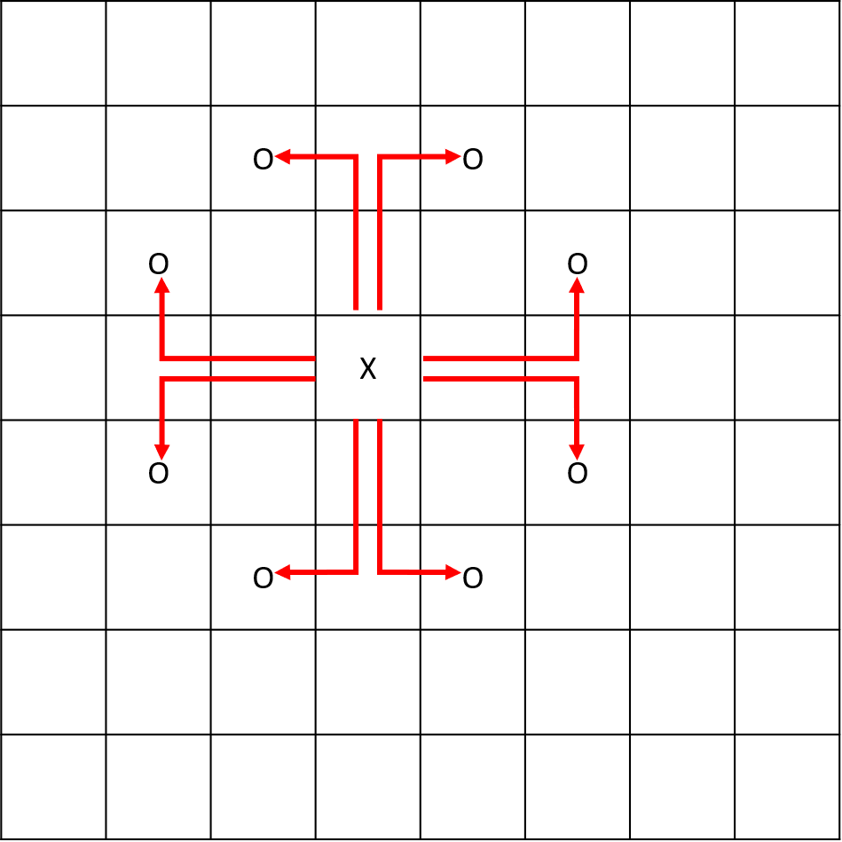
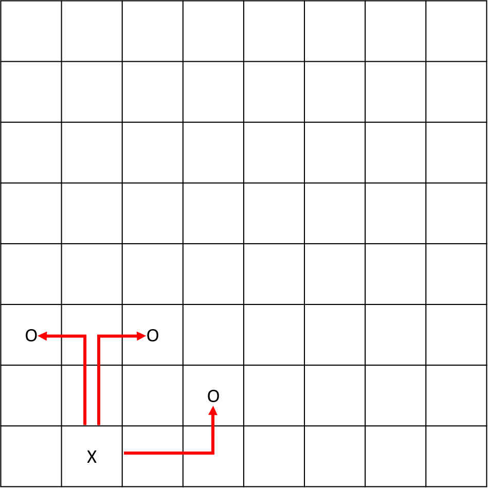

Now that we have the board set up, let's see where our knight can move.
The knight moves in an L-shape and is able to jump over other pieces. It has to move 2 squares horizontally and 1 square vertically, or 2 squares vertically and 1 square horizontally.
Here are two examples showing where the knight can move. In the first example, there are 8 possible moves for the knight.
In the second example, there are only 3 possible moves since the knight must stay on the board.
In this stage, you should alter your program to do the following:
The example below shows how your program should work.
The greater-than symbol followed by space (> ) represents the user input. Notice that
it's not the part of the input.
Example 1:
Enter your board's dimensions: > 6 5
Enter knight's starting position: > 4 2
Here are the possible moves:
---------------
5| _ _ _ _ _ _ |
4| _ _ O _ O _ |
3| _ O _ _ _ O |
2| _ _ _ X _ _ |
1| _ O _ _ _ O |
---------------
1 2 3 4 5 6 Example 2:
Enter your board's dimensions: > 3 4
Enter knight's starting position: > 2 2
Here are the possible moves:
---------
4| O _ O |
3| _ _ _ |
2| _ X _ |
1| _ _ _ |
---------
1 2 3Example 3:
Enter your board's dimensions: > 1 2
Enter knight's starting position: > 1 2
Here are the possible moves:
-----
2| X |
1| _ |
-----
1